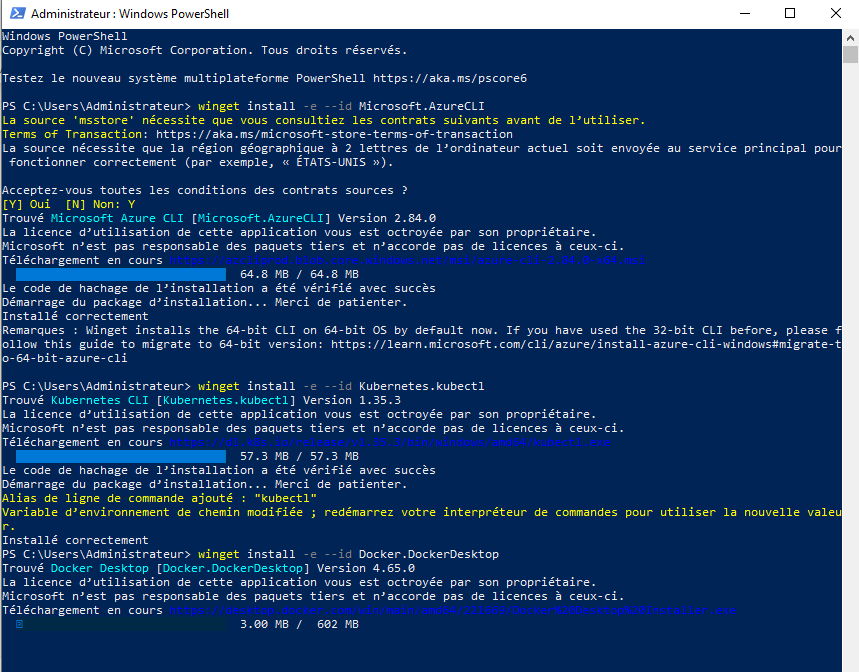
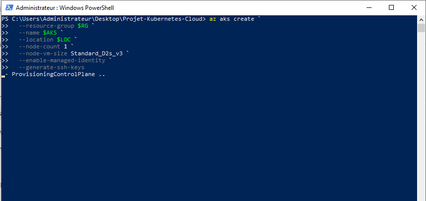
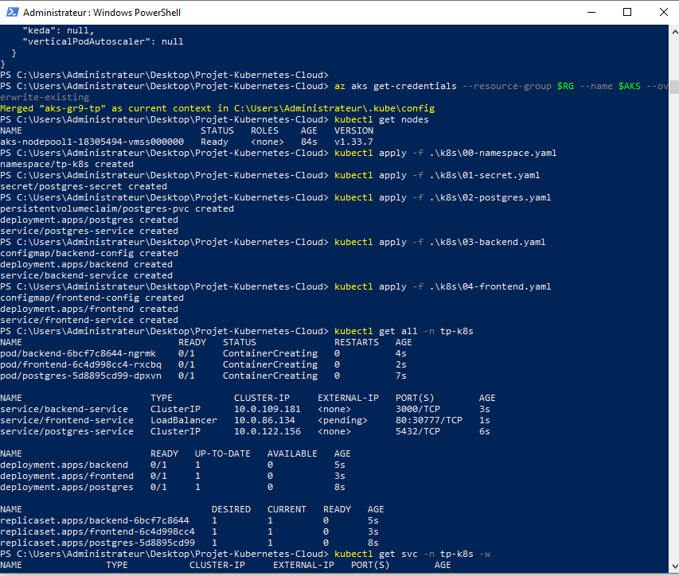
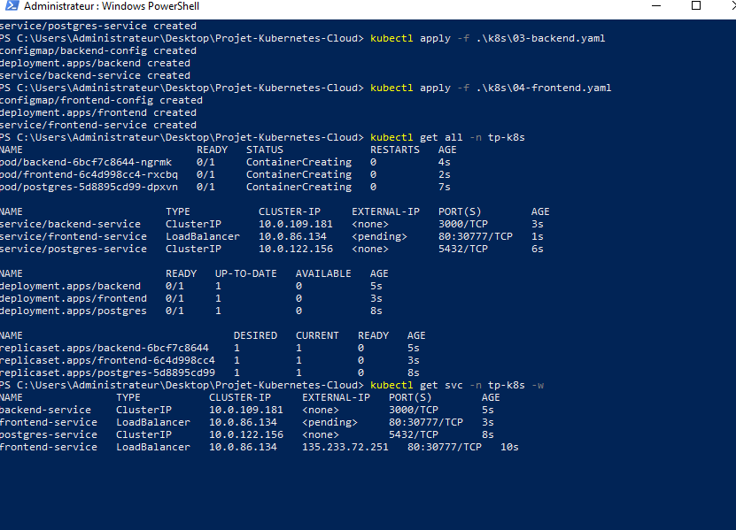
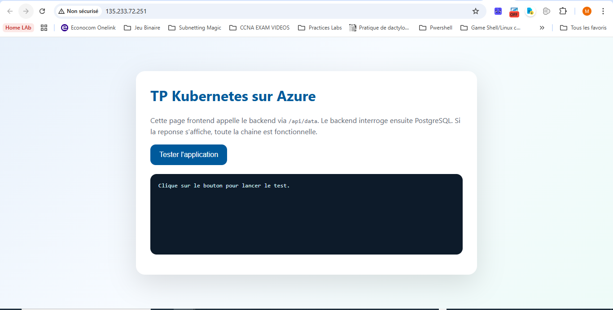
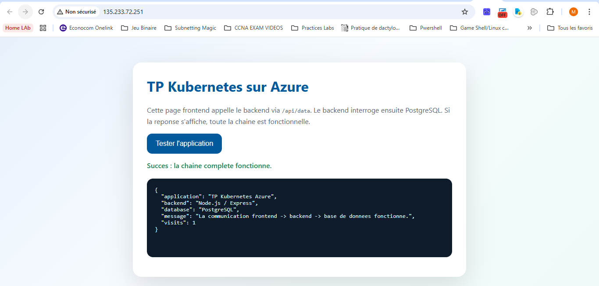
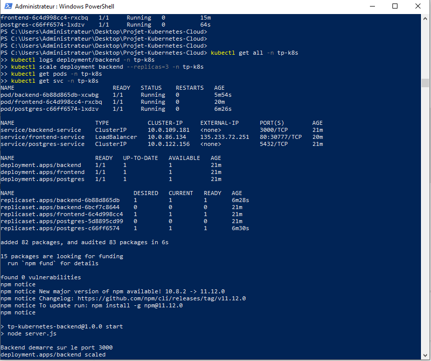
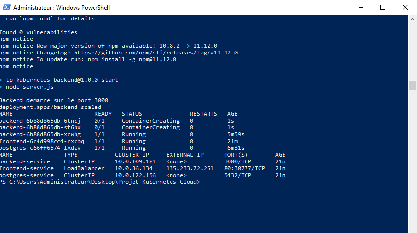
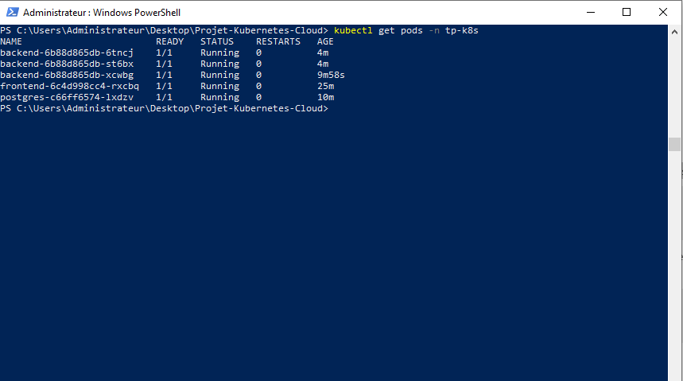
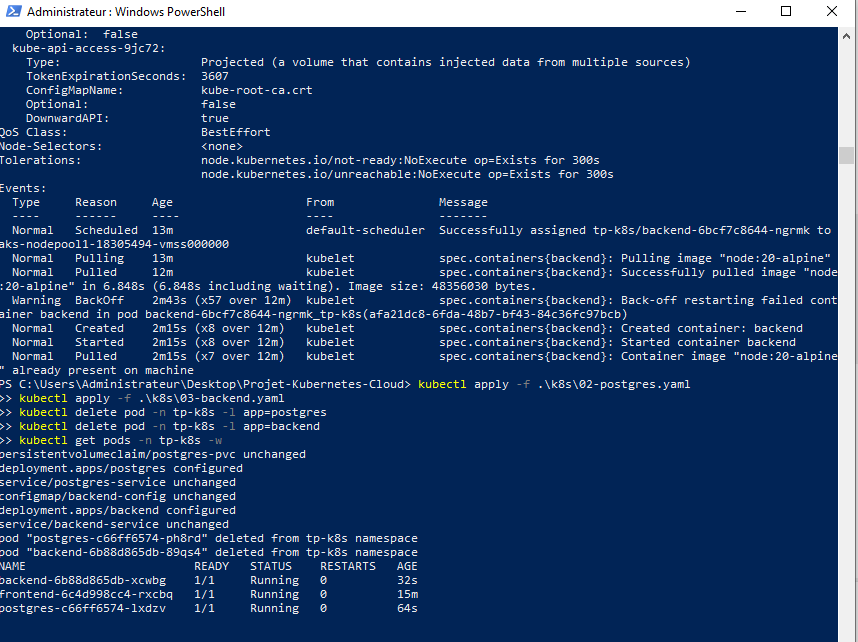

Déploiement d'une application multi-conteneurs sur Azure Kubernetes Service (AKS)
Centre de formation : AFCI
Sujet : Kubernetes sur Azure
Plateforme cloud : Microsoft Azure
Service principal utilisé : Azure Kubernetes Service (AKS)
Groupe de ressources : GR-9
Cluster créé : aks-gr9-tp
Objectif : Déployer, exposer et scaler une application complète
1. Introduction
2. Présentation de Kubernetes
3. Différence entre Docker et Kubernetes
4. Rôle des Pods, Deployments et Services
5. Architecture retenue pour le TP
6. Environnement et contraintes du projet
7. Mise en place de l'environnement Azure
8. Déploiement Kubernetes de l'application
9. Vérifications techniques et tests
10. Démonstration de la scalabilité
11. Difficultés rencontrées et corrections apportées
12. Conclusion
Dans le cadre de ce TP, l'objectif était de mettre en pratique le déploiement d'une application conteneurisée sur Microsoft Azure à l'aide de Kubernetes. Le sujet demandait à la fois une partie théorique sur Kubernetes et une partie pratique consistant à mettre en place un cluster, déployer une application en plusieurs composants, exposer cette application sur Internet, puis démontrer sa montée en charge.
Le travail réalisé s'appuie sur un déploiement concret d'une application composée de trois éléments :
L'application finale a été déployée sur un cluster AKS (Azure Kubernetes Service) créé dans Azure. Le frontend a été rendu accessible publiquement via un service de type LoadBalancer, tandis que le backend et la base de données ont été maintenus dans le cluster via des services de type ClusterIP.
Ce rapport présente les notions théoriques essentielles, la démarche de réalisation, les contraintes du contexte de formation, les corrections apportées en cours de déploiement et les preuves de bon fonctionnement obtenues. L'objectif est de fournir un document clair, structuré et exploitable comme rendu de formation.
Kubernetes est une plateforme open source d'orchestration de conteneurs. Son rôle est de permettre le déploiement, la supervision, la mise à l'échelle et la gestion d'applications composées de conteneurs.
Dans un environnement classique, il est possible d'exécuter un conteneur Docker sur une machine. Cependant, dès que l'application devient plus complexe, par exemple lorsqu'elle contient plusieurs services ou lorsqu'elle doit rester disponible même en cas de panne, il devient nécessaire de disposer d'un système capable d'automatiser cette gestion. Kubernetes répond précisément à ce besoin.
Les principales fonctionnalités offertes par Kubernetes sont les suivantes :
Dans ce TP, Kubernetes a été utilisé pour exécuter et coordonner les trois briques de l'application. Cela a permis d'isoler les composants, de définir leurs interactions et de reproduire une architecture proche d'un environnement professionnel.
Docker et Kubernetes sont complémentaires, mais ils n'ont pas le même rôle.
Docker est un outil de conteneurisation. Il sert à empaqueter une application avec ses dépendances dans un conteneur. Cela garantit que l'application se lance de manière identique sur différentes machines.
Kubernetes, de son côté, n'est pas un outil de construction d'images, mais une plateforme d'orchestration. Son rôle est d'exécuter et d'administrer un ensemble de conteneurs sur un cluster.
On peut résumer la différence ainsi :
Exemple concret dans le TP :
Docker répond donc au besoin d'empaquetage, tandis que Kubernetes répond au besoin d'exploitation en production.
Le Pod est l'unité minimale d'exécution dans Kubernetes. Un Pod peut contenir un ou plusieurs conteneurs partageant le même réseau et éventuellement le même stockage.
Dans ce TP :
Le Deployment permet de décrire l'état souhaité d'une application. Il indique notamment :
Dans ce TP, trois Deployments ont été utilisés :
frontendbackendpostgresLe Deployment backend a également servi pour la démonstration de la scalabilité, en passant de 1 à 3 réplicas.
Un Service Kubernetes permet d'exposer un ensemble de Pods sous une adresse réseau stable. Cela évite de dépendre de l'adresse IP d'un Pod, qui peut changer en cas de redémarrage.
Trois Services ont été créés :
frontend-service de type LoadBalancerbackend-service de type ClusterIPpostgres-service de type ClusterIPLe service LoadBalancer a permis d'obtenir une adresse IP publique Azure afin d'accéder à l'application depuis le navigateur. Les services internes ClusterIP ont permis la communication entre le frontend, le backend et la base de données à l'intérieur du cluster.
L'architecture mise en place est volontairement simple, fonctionnelle et économique afin de respecter les contraintes du centre de formation et de limiter les coûts Azure.
Le navigateur de l'utilisateur appelle le frontend publié sur Internet. Le frontend transmet ensuite les requêtes API au backend. Le backend interroge PostgreSQL pour stocker et lire les données.
Schéma simplifié :
Utilisateur
|
v
Frontend (Nginx) -- Service LoadBalancer --> Internet
|
v
Backend (Node.js / Express) -- Service ClusterIP
|
v
PostgreSQL -- Service ClusterIP + PVC
Les choix retenus ont été les suivants :
Ce dernier point a été particulièrement utile, car l'abonnement Azure mis à disposition ne permettait pas d'utiliser Microsoft.ContainerRegistry.
Le TP a été réalisé sur un poste Windows avec PowerShell. Plusieurs contraintes techniques ont dû être prises en compte :
Microsoft.ContainerRegistry.Pour contourner ces limites, la stratégie suivante a été retenue :
Azure CLI et kubectl ;ConfigMap.Cette stratégie a permis d'obtenir un résultat totalement fonctionnel tout en restant compatible avec les droits réels disponibles sur la souscription.
Cette capture montre l'installation de Azure CLI, kubectl et Docker Desktop via winget. Même si Docker n'a finalement pas été utilisé pour le déploiement final, cette étape faisait partie de la préparation de l'environnement.

La connexion à Azure a été réalisée avec la commande :
az loginUne fois la session ouverte, il a été constaté qu'un groupe de ressources existait déjà :
GR-9Ce groupe étant vide, il a été décidé d'y créer uniquement le cluster AKS nécessaire au TP.
Une vérification préalable a permis de constater l'absence de ressources préexistantes :
Cette capture montre la commande az aks create avec les variables de travail définies dans PowerShell et le démarrage du provisioning du cluster AKS dans Azure.

La première tentative avec la taille de machine Standard_B2s a échoué car ce SKU n'était pas autorisé dans la souscription utilisée. Après consultation du message d'erreur, une taille autorisée plus légère a été retenue :
Standard_D2s_v3La création du cluster a été réalisée avec la commande suivante :
az aks create `
--resource-group GR-9 `
--name aks-gr9-tp `
--location centralus `
--node-count 1 `
--node-vm-size Standard_D2s_v3 `
--enable-managed-identity `
--generate-ssh-keys
Le cluster a été créé avec succès, puis les informations d'accès ont été récupérées avec :
az aks get-credentials --resource-group GR-9 --name aks-gr9-tp --overwrite-existing
kubectl get nodes
Le nœud est apparu à l'état Ready, ce qui a validé la mise en service du cluster.
Le projet a été structuré autour de plusieurs fichiers YAML Kubernetes :
00-namespace.yaml01-secret.yaml02-postgres.yaml03-backend.yaml04-frontend.yamlCes fichiers définissent respectivement :
Un namespace dédié tp-k8s a été créé afin d'isoler les ressources du TP dans le cluster. Un Secret a également été mis en place pour stocker les variables d'environnement PostgreSQL :
POSTGRES_DBPOSTGRES_USERPOSTGRES_PASSWORDDATABASE_URLPostgreSQL a été déployé avec :
Deployment ;PersistentVolumeClaim de 1 Go ;Service interne ClusterIP.Le stockage persistant a été nécessaire pour éviter la perte immédiate des données en cas de redémarrage du Pod.
Le backend a été exécuté sur une image publique node:20-alpine. Le code server.js et le package.json ont été fournis via ConfigMap. Au démarrage, le conteneur :
ConfigMap ;Le backend expose deux routes :
/api/health pour la supervision ;/api/data pour l'appel applicatif.La route /api/data incrémente un compteur dans PostgreSQL et retourne un JSON prouvant la communication entre les composants.
Le frontend s'appuie sur l'image nginx:1.27-alpine. Une page HTML simple est exposée via Nginx. Une configuration Nginx personnalisée permet de :
/api/* vers backend-service.Le frontend a été publié via un service LoadBalancer, ce qui a permis à Azure d'attribuer une adresse IP publique.
Les commandes suivantes ont été utilisées :
kubectl apply -f .\k8s\00-namespace.yaml
kubectl apply -f .\k8s\01-secret.yaml
kubectl apply -f .\k8s\02-postgres.yaml
kubectl apply -f .\k8s\03-backend.yaml
kubectl apply -f .\k8s\04-frontend.yaml
Cette capture montre la récupération des identifiants Kubernetes avec az aks get-credentials, la vérification du nœud avec kubectl get nodes, puis l'application des différents manifests YAML.

Cette capture met en évidence :
ClusterIP du backend et de PostgreSQL ;LoadBalancer du frontend ;135.233.72.251.
Après déploiement, plusieurs commandes de contrôle ont été exécutées :
kubectl get all -n tp-k8s
kubectl get pods -n tp-k8s
kubectl get svc -n tp-k8s
L'application a ensuite obtenu une adresse IP publique via frontend-service :
135.233.72.251Cette IP a permis d'ouvrir l'application dans le navigateur.
Dans l'interface web, un bouton Tester l'application déclenche un appel vers /api/data. Le backend répond alors avec un message JSON contenant :
visits.Le test réussi a affiché :
{
"application": "TP Kubernetes Azure",
"backend": "Node.js / Express",
"database": "PostgreSQL",
"message": "La communication frontend -> backend -> base de donnees fonctionne.",
"visits": 1
}
Cette réponse valide simultanément :
Cette capture montre l'application frontend exposée sur Internet avant l'appel API, avec le bouton Tester l'application.

Cette capture constitue la preuve principale de bon fonctionnement. On y voit le message de succès ainsi que la réponse JSON retournée par le backend après interrogation de PostgreSQL.

Les logs du backend ont également montré :
npm.Une commande telle que kubectl logs deployment/backend -n tp-k8s a permis de confirmer que le backend était bien lancé sur le port 3000.
L'une des exigences du TP était de démontrer la montée en charge de l'application.
Pour cela, le Deployment backend a d'abord été observé avec un seul replica. Ensuite, la commande suivante a été lancée :
kubectl scale deployment backend --replicas=3 -n tp-k8sKubernetes a alors automatiquement créé deux nouveaux Pods backend supplémentaires. Après quelques instants, l'état final est devenu :
backend-6b88d865db-6tncj 1/1 Running
backend-6b88d865db-st6bx 1/1 Running
backend-6b88d865db-xcwbg 1/1 Running
frontend-6c4d998cc4-rxcbq 1/1 Running
postgres-c66ff6574-lxdzv 1/1 Running
Cette opération démontre que Kubernetes peut :
Dans un contexte réel, cette logique permettrait d'absorber une augmentation du trafic sans interrompre l'application.
Cette capture regroupe les principales preuves techniques avant le scaling :
kubectl get all -n tp-k8s
Cette capture montre l'effet immédiat de la commande kubectl scale deployment backend --replicas=3 -n tp-k8s. Deux nouveaux Pods backend apparaissent en phase ContainerCreating.

Cette capture valide l'état final attendu après la montée en charge, avec trois Pods backend actifs et prêts à recevoir des requêtes.

Plusieurs difficultés concrètes ont été rencontrées pendant ce TP.
Docker Desktop a été installé, mais son démarrage a échoué car la virtualisation n'était pas activée sur le poste. Il n'était donc pas possible de construire localement les images Docker de manière classique.
Solution retenue : abandonner Docker local et s'orienter vers un déploiement ne dépendant pas d'un moteur Docker local.
La souscription n'était pas autorisée à utiliser Microsoft.ContainerRegistry, et l'utilisateur ne disposait pas des droits pour enregistrer ce provider.
Solution retenue : ne pas utiliser ACR et injecter le code applicatif via ConfigMap en s'appuyant sur des images publiques.
La taille Standard_B2s initialement prévue pour limiter les coûts n'était pas disponible dans la souscription.
Solution retenue : utiliser Standard_D2s_v3, qui figurait dans la liste des tailles autorisées.
Au premier déploiement, PostgreSQL échouait avec l'erreur suivante :
initdb: error: directory "/var/lib/postgresql/data" exists but is not empty
initdb: detail: It contains a lost+found directory
Le problème venait du fait que PostgreSQL initialisait sa base directement à la racine du volume monté.
Correction apportée : ajout de la variable d'environnement :
PGDATA: /var/lib/postgresql/data/pgdataCela a permis à PostgreSQL d'écrire dans un sous-répertoire propre du volume.
Le backend échouait car le script de démarrage tentait de copier des fichiers dans /app alors que ce dossier n'existait pas.
Correction apportée : ajout de la commande :
mkdir -p /appavant la copie des fichiers depuis la ConfigMap.
Cette capture montre la réapplication des manifests corrigés, la suppression des anciens Pods défaillants et le retour à un état Running du frontend, du backend et de PostgreSQL.

Ces corrections ont permis d'obtenir un fonctionnement normal de l'ensemble de la chaîne applicative.
Ce TP a permis de mettre en œuvre un déploiement Kubernetes complet sur Azure, malgré plusieurs contraintes techniques liées à l'environnement de formation et aux limitations de la souscription.
Les objectifs demandés ont été atteints :
Au-delà du simple résultat final, ce TP a également montré l'intérêt pratique de Kubernetes dans un environnement cloud :
Enfin, l'expérience a mis en évidence l'importance de l'adaptation technique. Face aux limites rencontrées, il a fallu ajuster la solution sans perdre l'objectif principal. Le résultat final reste conforme aux attentes du sujet et constitue une démonstration concrète d'un déploiement cloud moderne sur Azure avec Kubernetes.
az login
az aks create --resource-group GR-9 --name aks-gr9-tp --location centralus --node-count 1 --node-vm-size Standard_D2s_v3 --enable-managed-identity --generate-ssh-keys
az aks get-credentials --resource-group GR-9 --name aks-gr9-tp --overwrite-existing
kubectl apply -f .\k8s\00-namespace.yaml
kubectl apply -f .\k8s\01-secret.yaml
kubectl apply -f .\k8s\02-postgres.yaml
kubectl apply -f .\k8s\03-backend.yaml
kubectl apply -f .\k8s\04-frontend.yaml
kubectl get all -n tp-k8s
kubectl get svc -n tp-k8s
kubectl logs deployment/backend -n tp-k8s
kubectl scale deployment backend --replicas=3 -n tp-k8s
kubectl get pods -n tp-k8s
az aks delete --resource-group GR-9 --name aks-gr9-tp --yes
k8s/00-namespace.yamlk8s/01-secret.yamlk8s/02-postgres.yamlk8s/03-backend.yamlk8s/04-frontend.yamlREADME.md